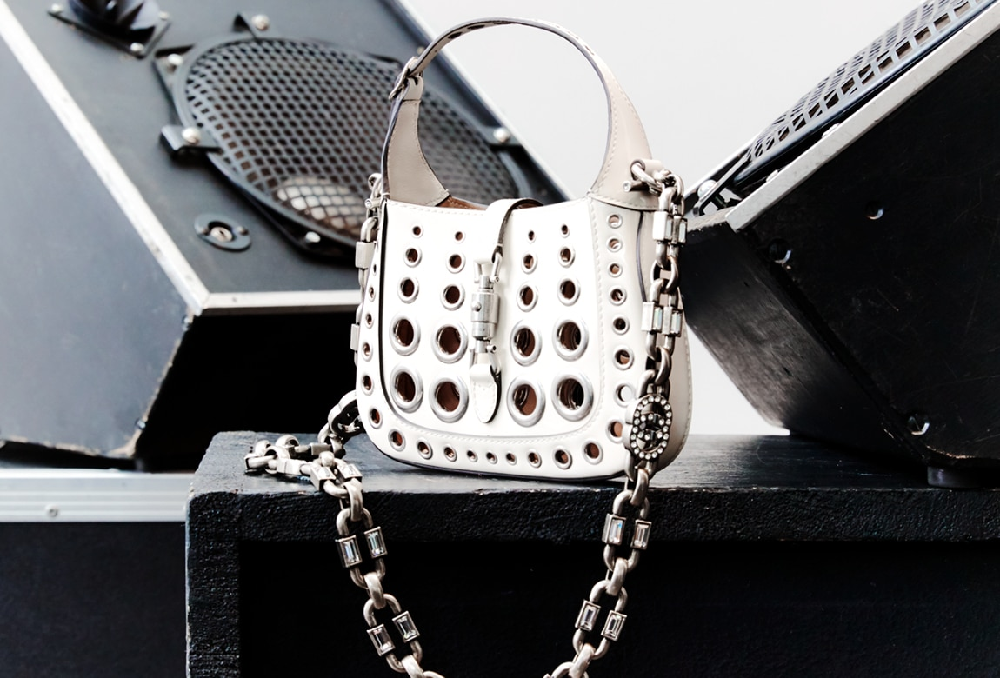

Under the steadfast leadership of the infinitely talented Alessandro Michele, A&M presents collections that serve as both a reflection of the past and a glimpse into the future. Michele often turns to the brand's archives, merging details from the past with designs of the present. Historical elements are repainted, reshaped and reimagined by a modern day alchemist who infuses every piece with his own unique vision – a vision that is spun from youth, colour and magic. Founded in Florence in 1921, A&M is one of the world’s leading luxury fashion brands, with a renowned reputation for creativity, innovation and Italian craftsmanship.
